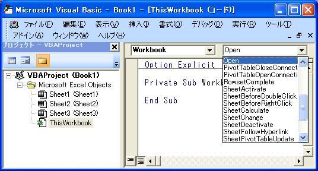

第21回.イベント処理について
エクセルで顧客管理を作ります、
前回で20回を達成しました、
気張らず、気負わず、気を抜かず、これからも続けて行きます。
今回は、特に前３回が駆け足で、説明不足であった事もあり、補足しつつ復習しましょう。
その中でも、おそらく初心者が特に分かりづらいと思われるイベントについて説明します。
ワークブックのイベント

VBEの画面です。
「表示」→「コード」、または、F7
ワークブックのイベントは、ここに記述します。
「(General)」と表示されているコンボボックスで、「Workbook」を選択すると、
自動で、
Private Sub Workbook_Open()
End Sub
が作成されます。
現在までは、この「Workbook_Open」のみ使用しています。
今後も使用するとしても、「BeforeClose」「BeforSave」くらいだろうと思います。
結局、ワークブックのイベントは、ブック全体に関するイベントですので、
あまり頻繁には使用しません。
どのようなイベントがあるかは、この一覧を見ればおおよそは理解して頂けると思います。
英語で書いてあるので、概ね直訳すれば、その通りの内容です。
今後使用することがあれば、個別に説明します。
Workbook_Open
ブックが開いた直後に実行されるイベントです。
ワークブックのイベントでは、最も使用頻度の高いイベントです。
このイベントでよくやる処理を多少追加説明します。
１．変数に初期化する
２．指定のシート、フォームを開く
３．キーやアクションにマクロを割り当てる
４．ブックを閉じる時に自動処理させる
等々になります。
その他、ピボットやハイパーリンク等の処理もあります。
今のところ、３．に該当する、
Application.OnKey "キー", "マクロ"
だけが出てきました。
１．２．の使い方は、本ソフトにおいても、終盤で出てくる事になると思います。
現在は、各シート毎の機能を作成していますので、
それが終了した後、メニュー用のシートを作成したりしますので、
その時に使う事になると思います。
また、４．については、まだ未定ですが、大切な顧客データの喪失防止に、
最後に対策を施そうかと考え得ています。
ワークシートのイベント
「プロジェクト」で、「Sheet1(Sheet1)」等のシートを選択し、
「表示」→「コード」、または、F7
ワークシートのイベントは、ここに記述します。
「(General)」と表示されているコンボボックスで、「Worksheet」を選択すると、
自動で、
Private Sub Worksheet_SelectionChange(ByVal Target As Range)
End
Sub
が作成されます。
これは、セルの選択位置が変更された時に発生するイベントです。
なぜ、これが標準で作成されるのか、私は疑問です。
そんなに使わないと思うのですが・・・
今までに出てきたのは、
Private Sub Worksheet_Activate()
Private Sub Worksheet_Change(ByVal Target As Range)
の２つです。
Private Sub Worksheet_Activate()
これは、シートがアクティブになったときに発生します。
つまり、他のシートを選択している状態から、そのシートへ移ったときです。
ですから、シートの内容の初期化や、初期表示に使用する事になります。
今回は使用していますが、
本来は、マクロでシートを切り替える際に、同時に処理してしまうので、そんなに頻繁には使用しません。
シート名の表示を消していない場合は、手動でシート変更できますので、そのような場合に必要になります。
今回は、今のところはその状態ですので、使用しています。
Private Sub Worksheet_Change(ByVal Target As Range)
これが問題ですね。
少し凝ったプログラムを作成すると、どうしても使うことになります。
どこかのセルに変更が加えられた時に実行されるイベントです。
ここでの問題は、どのセルが変更されたかになります。
それが、Targetに入っているのです。
このTargetに、何が、どのように入ってくるかを理解すれば良いのです。
Target
引数の型を見て頂ければおわかりになると思いますが、
これは、Rangeオブジェクトです。
従って、通常のRangeと同様に扱えばよいのです。
だだ、問題は、普通のRangeなら、自分でアドレスを設定しています。
Range("A1:B10")または、Range(Cells(1, 1), Cells(10, 2))のようにです。
しかし、このTargetには、どこのセルが入っているかが分かりません。
従って、そのセル範囲を判定してから処理するしかなく、これが結構難しいのです。
単独セルしか操作しなければ、大した問題はありません。
Target.Addressには、$B$10のようになっています。
しかし、複数セルを選択した状態で操作した場合は、
$B$2:$C$3
$B$2,$C$10
のように入ってきます。
これが問題です。
今回作成したプログラムでは、
Target.Cells(1.1)のように、Tagetの先頭セルのみ判定しています。
では、問題です。
「作成したプログラムのバグとも言える欠陥は何でしょうか？」
 順番に飲んで待ってます（笑）
順番に飲んで待ってます（笑）
それは、例えば、住所１と住所２を同時に選択し、「Delete」した場合には、
後で選択されたセルは、計算式が設定されないことです。
当然ですね、Target.Cells(1.1)で、Tagetの先頭セルしか処理していませんから。
これは作成中に分かっていた事ですが、対応はしませんでした。
これに対応する意味があまりないからです。
個別に、Deleteすれば計算式が設定されますし、顧客番号が変更されれば全て再設定されますから。
元々は、Addressを比較して、対象セルかを判断していましたので、
複数セルの判定は、かなり面倒なので、対応を止めました。
無理にやろうとすれば、プログラムを複雑にしてしまうだけです。
このような場合は、無理に対応せずに、使用上の注意としておけば良いと考えています。
いずれ問題があっさり解決する事もあります。
その後、Intersectに変更したため、多少ちぐはぐなプログラムになってしまっているようです。
しかし、この記事を書きながら、再度プログラムを見てみると、
なんと簡単に対応可能ではありませんか。
以下にその修正版を掲載します。
Private Sub Worksheet_Change(ByVal Target As Range)
Dim strSht As
String
Dim lngRow As Long, lngCol As Long
Dim adrCode As
String
Dim strAdr1 As String, strAdr2 As String
Dim strCalc As
String
If Intersect(Target, Range("納品書_顧客番号")) Is Nothing And
_
Intersect(Target, Range("納品書_郵便番号")) Is Nothing And
_
Intersect(Target, Range("納品書_住所１")) Is Nothing And
_
Intersect(Target, Range("納品書_顧客名")) Is Nothing And
_
Intersect(Target, Range("納品書_担当者名")) Is Nothing Then
Exit
Sub
End If
adrCode = Range("納品書_顧客番号").Address(1, 1,
xlR1C1)
With シート取得("顧客一覧")
strSht = .Name & "!"
lngRow =
.Range("顧客番号").Rows.Count
lngCol = .Cells.SpecialCells(xlLastCell).Column
- .Range("顧客一覧開始").Column
strAdr1 = .Range(.Range("顧客番号").Cells(1, 1),
_
.Range("顧客番号").Cells(1, 1).Offset(lngRow - 1,
lngCol)).Address(1, 1, xlR1C1)
strAdr2 = .Range(.Range("顧客一覧開始").Cells(1,
1), _
.Range("顧客一覧開始").Cells(1, 1).Offset(0, lngCol)).Address(1,
1, xlR1C1)
End With
strCalc = "VLOOKUP(" & adrCode & ","
& strSht & strAdr1 & ",MATCH(RC1," & strSht & strAdr2 &
",0),FALSE)"
Application.EnableEvents =
False
Application.Calculation = xlCalculationManual
If Not
Intersect(Target, Range("納品書_顧客番号")) Is Nothing
Then
Range("納品書_郵便番号").FormulaR1C1 = "=""〒""&" &
strCalc
Range("納品書_住所１").FormulaR1C1 = "=" &
strCalc
Range("納品書_住所２").FormulaR1C1 = "=" &
strCalc
Range("納品書_顧客名").FormulaR1C1 = "=" & strCalc & "&""
御中"""
Range("納品書_担当者名").FormulaR1C1 = "=" & strCalc & "&""
様"""
End If
If Not Intersect(Target, Range("納品書_郵便番号")) Is Nothing
Then
If IsEmpty(Range("納品書_郵便番号"))
Then
Range("納品書_郵便番号").FormulaR1C1 = "=""〒""&" &
strCalc
End If
End If
If Not Intersect(Target,
Range("納品書_住所１")) Is Nothing Then
If IsEmpty(Range("納品書_住所１"))
Then
Range("納品書_住所１").FormulaR1C1 = "=" & strCalc
End
If
End If
If Not Intersect(Target, Range("納品書_住所２")) Is Nothing
Then
If IsEmpty(Range("納品書_住所２"))
Then
Range("納品書_住所２").FormulaR1C1 = "=" & strCalc
End
If
End If
If Not Intersect(Target, Range("納品書_顧客名")) Is Nothing
Then
If IsEmpty(Range("納品書_顧客名"))
Then
Range("納品書_顧客名").FormulaR1C1 = "=" & strCalc & "&""
御中"""
End If
End If
If Not Intersect(Target, Range("納品書_担当者名"))
Is Nothing Then
If IsEmpty(Range("納品書_担当者名"))
Then
Range("納品書_担当者名").FormulaR1C1 = "=" & strCalc & "&""
様"""
End If
End If
Application.Calculation =
xlCalculationAutomatic
Application.EnableEvents = True
End
Sub
そうなんです、基本は、Select Caseを使わず、IF文を繰り返せば良かったのです。
それで、複数セルに対応できるので、Target.Cells(1.1)もTargetだけにしました。
ただし、特別注意として、
イベントの連鎖に気を付ける必要があります。
プログラムでセルの内容を書き換えても、Worksheet_Changeが、再度呼ばれますので、
イベントの発生を抑止する必要があります、前回は入れ忘れていましたね。
それが、
Application.EnableEvents = False
モジュールの最後で、Trueに戻します。
また、件数が増えてくると、VLOOKUPの計算時間がかかってきますので、
一旦計算を停止します。
Application.Calculation = xlCalculationManual
ですね。
これを指定しないと、１つのセルに計算式を設定するたびに再計算が実行され、
処理がおそくなってしまいます。
これらの処理は、「マクロ開始処理」「マクロ終了処理」で同じですが、
これらのモジュールには、他の処理も入っており、ここでは、この２つだけで良いでしょう。
また、先頭で対象セルでは無い場合には、直ぐにモジュールを抜けるようにも追加しました。
また、「顧客番号」で、全計算式を設定した後は、モジュールを抜けた方が良いのだが、
まあ、同時に全てDeleteなんて、そんな操作する人はいないだろうから、どうでも良いか。
標準モジュールとの使い分け
特段の決まりがある訳ではないが、覚えておく必要があることがあります。
他のモジュールからCallする場合は、
モジュール.Subモジュール
となります、このモジュールとは、
「プロジェクト」の「Sheet1(Sheet1)」の最初の「Sheet1」です。
()内は、シート名です。
このシートモジュールの名称は、「プロパティ」で変更ができます。
ただし、プロパティを変更しても、Callしている箇所は自動では直りませんのでご注意を。
また、当然のことではありますが、
このシートモジュールは、シートと対なので、
シートを他のブックに移動・複写した時も、一緒にくっついていきます。
そして、これが最も考慮すべきことです。
つまり、作成したシートだけを誰かに渡す可能性があるなら、
全て、シートモジュールに記述しないと、動作しなくなります。
もちろん、標準モジュールも一緒に渡せばよいのですが、
そこには、膨大なコードが入っている場合は、ちょっと困りますよね。
まあ、ある程度のソフトの場合は、このような事は無いと思います。
作成中のソフトは、間違いなく無理ですよ！
では、通常の使い分けはどうするべきか。
基本的には、イベントのみ記述するべきでしょう。
ただ、イベントのプロシージャーからCallする、SubやFunctionで、
他からCallする可能性が無いものは、入れても構わないと思います。
ただし、他のシートを操作するようなコードは、標準モジュールに入れた方が良いでしょう。
また、標準モジュールでは、シートの指定は必ずすべきです。
たとえ、そのシートがActiveになっていることが確実であったとしても、
シート指定は省略すべきではないと思います。
つまり、コードの「流用性」を考慮すべきでしょう。
もちろん、そのSubモジュールの先頭でActiveにしているのなら問題はないでしょうが、
ただ、なるべく、Activeにせずに、With等を使用するようにして下さい。
しかし、シートモジュールではどうでしょうか。
そのシートでしか使用しないのですから、指定する必要がありません。
他のシートモジュールにコピペしたとしても、結果は同じですから。
なかなか、話がまとまらなかったです。
イベント個々に注意点が違いますし、VBAと言っても、アクセスでは全く違ってきます。
当然、他のVB系の言語では、さらに全く違うものです。
ベテランのプログラマーでも結構目に見えないバグを残している事があります。
あっ、今回は私もだ
次回は、コントロールについて、追加説明する事にしましょうか。
イベントと、コントロールの扱いが分かれば、ぐっと作成できるプログラムの幅が広がります。
ではでは、今回はここまで。
また次回に。
同じテーマ「エクセル顧客管理」の記事
第18回.納品書を作成、顧客情報を取得(1)
第19回.納品書を作成、顧客情報を取得(2)
第20回.納品書を作成、顧客情報を取得(3)
第21回.イベント処理について
第22回.コントールについて
第23回.納品書を作成、商品情報を取得(1)
第24回.納品書を作成、商品情報を取得(2)
第25回.納品書を作成、商品情報を取得(3)
第26回.WorksheetFunctionについて
第27回.RangeとCellsの深遠
第28回.納品書データをデータベース化(1)
新着記事NEW ・・・新着記事一覧を見る
VBA100本ノック 100本目：WEBから100本ノックのリストを取得｜VBA練習問題（3月3日）
VBA100本ノック 99本目：自動席替え（行列と前後左右が全て違うように）｜VBA練習問題（3月2日）
VBA100本ノック 98本目：席替えルールが守られているか確認｜VBA練習問題（3月1日）
VBA100本ノック 97本目：Accessデータを取得（グループ集計）｜VBA練習問題（2月27日）
VBA100本ノック 96本目：Accessデータを取得（マスタ結合&抽出）｜VBA練習問題（2月26日）
VBA100本ノック 95本目：図形のテキストを検索するフォーム作成｜VBA練習問題（2月24日）
VBA100本ノック 94本目：表範囲からHTMLのtableタグを作成｜VBA練習問題（2月23日）
VBA100本ノック 93本目：複数ブックを連結して再分割｜VBA練習問題（2月22日）
VBA100本ノック 92本目：セルの色を16進で返す関数｜VBA練習問題（2月20日）
VBA100本ノック 91本目：時間計算（残業時間の月間合計）｜VBA練習問題（2月19日）
アクセスランキング ・・・ ランキング一覧を見る
1.最終行の取得（End,Rows.Count）｜VBA入門
2.RangeとCellsの使い方｜VBA入門
3.変数宣言のDimとデータ型｜VBA入門
4.マクロって何？VBAって何？｜VBA入門
5.Range以外の指定方法（Cells,Rows,Columns）｜VBA入門
6.セルのコピー&値の貼り付け（PasteSpecial）｜VBA入門
7.繰り返し処理（For Next)｜VBA入門
8.セルに文字を入れるとは（Range,Value）｜VBA入門
9.マクロはどこに書くの（VBEの起動）｜VBA入門
10.とにかく書いてみよう（Sub,End Sub）｜VBA入門
このサイトがお役に立ちましたら「シェア」「Bookmark」をお願いいたします。
記述には細心の注意をしたつもりですが、
間違いやご指摘がありましたら、「お問い合わせ」からお知らせいただけると幸いです。
掲載のVBAコードは動作を保証するものではなく、あくまでVBA学習のサンプルとして掲載しています。
掲載のVBAコードは自己責任でご使用ください。万一データ破損等の損害が発生しても責任は負いません。